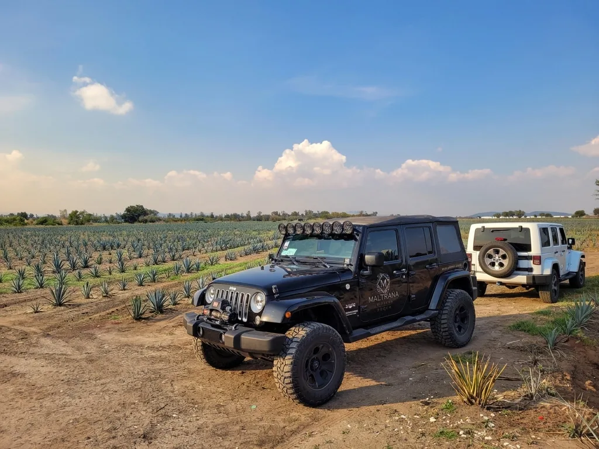
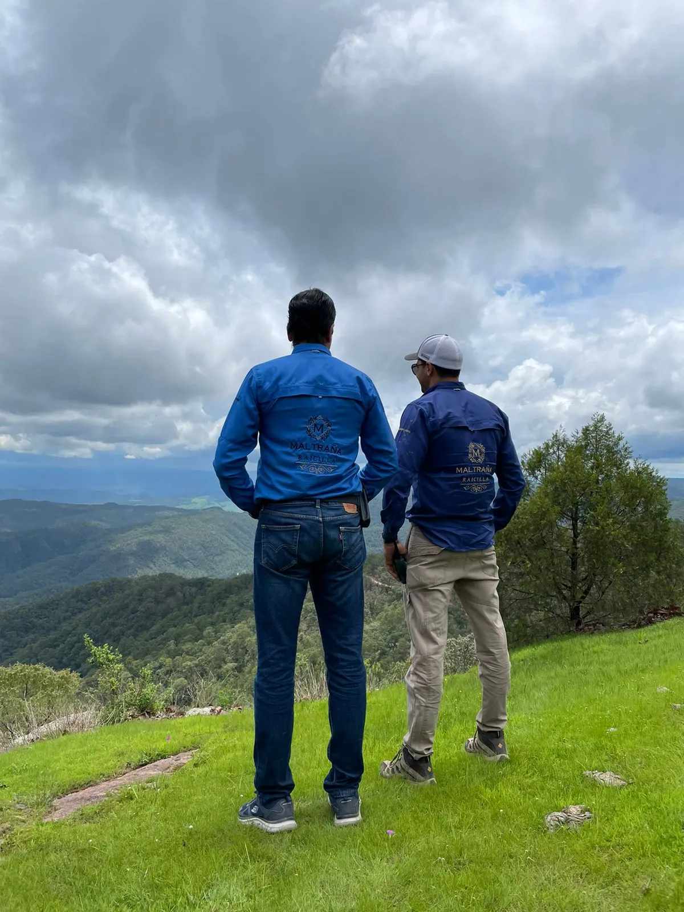

Ruta de la Raicilla

Un recorrido por el origen, la tradición y el alma de Jalisco.
La raicilla es mucho más que un destilado: es una expresión de la tierra, la historia y la cultura de las regiones de Jalisco donde nace.
Recorrer la Ruta de la Raicilla es adentrarse en sus paisajes, conocer las comunidades que la producen y descubrir el trabajo de los maestros taberneros que han conservado, generación tras generación, los conocimientos de su elaboración.
Desde los agaves que crecen en nuestras tierras hasta las tabernas donde la tradición cobra vida, cada parada revela una parte de la identidad de este destilado único.
En MALTRAÑA® creemos que conocer la raicilla es también conocer su origen, valorar a quienes la hacen posible y comprender la riqueza de una tradición que merece trascender fronteras.

La mejor manera de descubrir la raicilla es conocer la tierra y las historias que le dan vida.
MALTRAÑA, orgullosamente comprometida con la difusión y preservación de la cultura de la raicilla.
Descubre la Ruta de la Raicilla
Conoce sus destinos, explora sus tradiciones y descubre los lugares que dan vida a este emblemático destilado de Jalisco.

Experiencias